Concept
You run a small kitchen on the road. Every world is a destination with its own cuisine: its ingredients, its dishes, and the people who come in hungry. The board is where ingredients grow, the stations are where they become food, and the order row is who you are cooking for.
The long-term vision is Anthony Bourdain's Parts Unknown or Somebody Feeds Phil as a merge game: each place is about the people as much as the food. The demo carries the food; the characters and their stories are the next layer.
Design pillars
- Every merge means something. Chains are real culinary progressions (flour to dough to fresh pasta to puff pastry), and dishes are cooked from them in exact recipes, so the board reads as a pantry rather than an abstract puzzle.
- Cosy first, pressured by choice. The default loop never punishes slow play. Pressure is an opt-in mode, not a timer on every order.
- Destinations, not just levels. Worlds are places to travel to, with their own food and their own souvenirs to bring home.
- Everything is swappable. Content lives in a workbook and drop-in art files, so a real artist and a new cuisine slot in without re-engineering.
Core loop
- Tap a generatorSpend 1 energy to spawn a tier-1 ingredient from that generator's chains.
- Merge pairsDrag two identical items together to make the next tier; every chain climbs 8 tiers.
- Cook at a stationDrop the recipe's ingredients into a station, tap Cook, and wait out the timer.
- DeliverMatch a customer's order to earn coins, gems and mission progress.
- UnlockFinish the level's ten orders to open the next level and collect its new generator.
The board is a 7 by 9 grid and persists across levels, so a kitchen you have built keeps paying off. Items can be swapped, parked in the inventory, or deleted with a four-second undo. Energy refills at one point every two minutes to a cap of 100, and keeps refilling while the game is closed, as do cooks in progress.
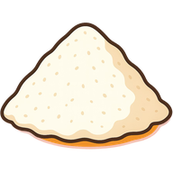
1Flour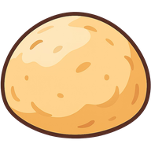
2Dough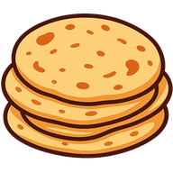
3Flatbread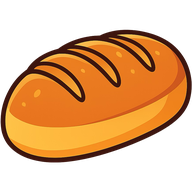
4Baked bread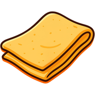
5Pasta dough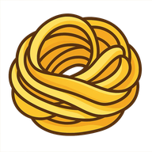
6Fresh pasta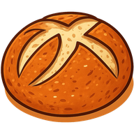
7Artisan bread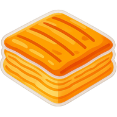
8Puff pastry
One of the twenty chains, the Wheat chain, tier by tier. Two of any tier merge into one of the next.
- Baked breadWheat tier 4
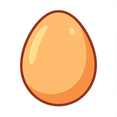
EggPoultry tier 1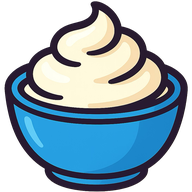
CreamDairy tier 2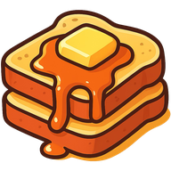
French ToastDeliver to an order
And one of the eighty recipes. Three merges take flour to baked bread; a station turns it, an egg and cream into French toast in two minutes.
Two ways to play
Casual
- Energy gates generator taps; waiting or refilling is the pacing.
- Five stations, full cook times, unlimited time per order.
- All ten of a level's orders are visible and can be worked in any order.
- Progress, board, inventory and station timers all save.
Rush Prototype
- Energy is free. Generators spawn on their own every 4 seconds, staggered, and speed up with every delivery to three times the base rate.
- Nothing can be deleted or stashed. A full board for 3 seconds loses the level.
- Two stations, cook times cut to a quarter, 40 orders per level, five shown at a time.
- Stations only accept ingredients an active order needs, so there is no hiding.
Rush is the current default for playtesting because it is the more surprising of the two. New players choose a mode from the Hub; the question of which one leads is open.
Content in the demo
- Worlds
- Breakfast & Bakery (18 levels), Barbecue (20 levels)
- Orders
- 380 across 38 levels, ten per level
- Chains
- 20 ingredient chains, 8 tiers each
- Recipes
- 80 dishes, up to 6 ingredients, exact match
- Generators
- 10 themed sources (Pantry, Fridge & Deli, Brew Bar, Grill Basket, Bar Cart...)
- Customers
- 10 regulars with portraits
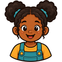
Economy
- Energy
- The pacing currency. Spent per generator tap; regenerates over time.
- Coins
- Earned per order. Planned sink: tickets to unlock new levels and worlds.
- Gems
- Premium currency, earned from some orders. Store and purchases not yet designed.
No monetisation is built. Paid cook-skips and energy refills exist in the reference games and are deliberately unbuilt until the loop is settled.
Progression and meta
- Levels unlock in sequence today. Each is an order queue plus a new generator, collected from a widget onto the board.
- Restaurant Goals: a weekly, calendar-aligned mission set with a milestone reward track, shared by every player.
- Hub: profile with chef name and avatar, mode select, and placeholders for World Select, Recipes and Mail.
- Planned: worlds as destinations with their own persistent board, coin tickets that let players pick their route, and a souvenir per world as a profile badge or collection. The grid, stations and customer cast stay shared across worlds to keep each new destination cheap to make.
References
flambé: merge and cook and Foodstars: Merge & Cook set the loop and screen layout. Tasty Travels shares the travel premise; the people-centred destinations are the intended difference.
Open questions
- Casual or Rush as the headline mode, and whether the last level loops or ends.
- Characters and dialogue: the theme depends on them, and nothing yet supports them.